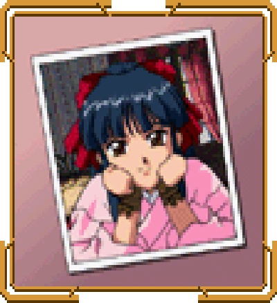
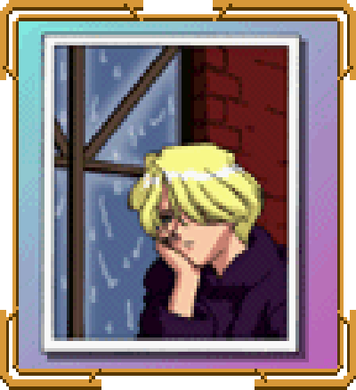
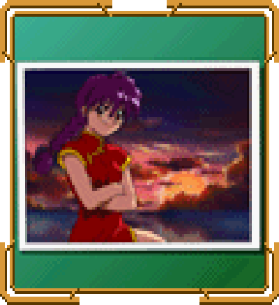
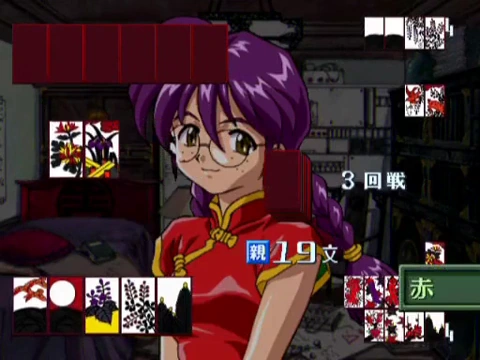
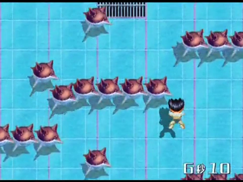
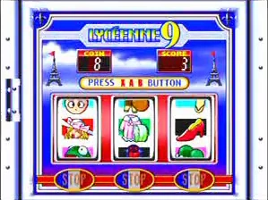
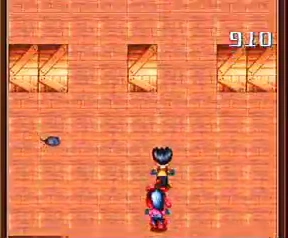
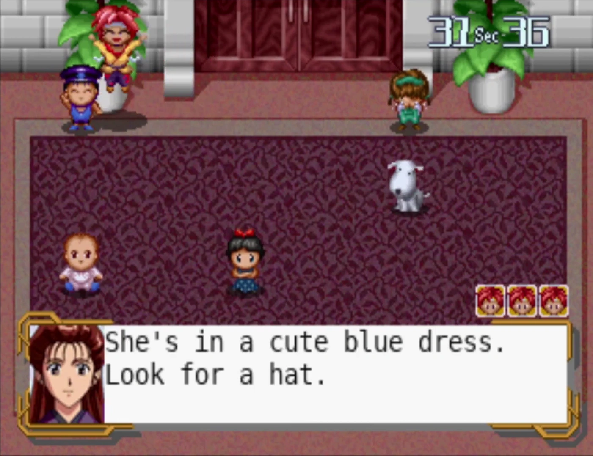
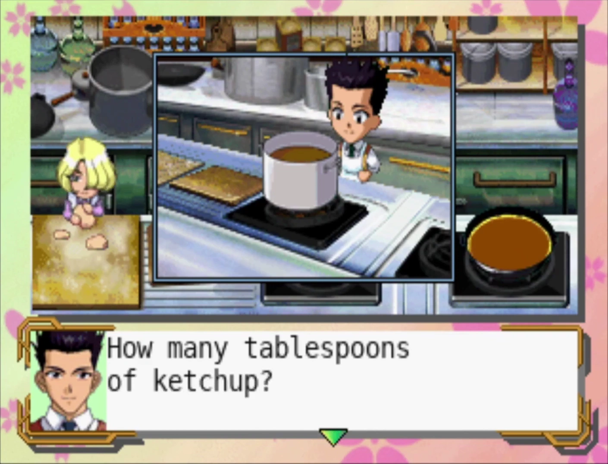

Bromides, Mini-Games & Extras
Complete collection tracker for ブロマイド, all seven story mini-games, and post-game challenges inside 帝劇の長い一日.
Regular Bromides (Episodes 1 to 6)
Buy one ブロマイド per episode at the 売店 during Episodes 1 through 6. Facing the display counter from 高村椿's side toward the foreground, the six stacks sit in fixed order from left or clerk-side to front in the order Sakura, Sumire, Maria, Kohran, Iris, and Kanna.



-
Regular 1 · 真宮寺さくら. Buying in Episode 1 grants extra trust if you revisit the 売店 during night patrol.
-
Regular 2 · 神崎すみれ. Pick from Stack 2 (second from Tsubaki's side) during any Episode 1 to 6 shop visit.
-
Regular 3 · マリア・タチバナ. Pick from Stack 3 during any Episode 1 to 6 shop visit.
-
Regular 4 · 李紅蘭. Buying in Episode 1 or Episode 2 while escorting Kohran grants a trust bonus with her.
-
Regular 5 · アイリス. Pick from Stack 5 during any Episode 1 to 6 shop visit.
-
Regular 6 · 桐島カンナ. Pick from Stack 6 (nearest the foreground) during any Episode 1 to 6 shop visit.
New Year & Special Bromides (Episode 8)
Holding all six regular heroine photos unlocks the Episode 8 お正月特製ブロマイド event when you visit Tsubaki after returning from three weeks of training. The first LIPS prompt offers Sakura, Sumire, and Maria. Letting its timer expire opens a second prompt for Iris, Kanna, and Kohran, and letting both timers expire yields Ayame's special card. Saving right before returning from training and advancing to the pre-battle save registers each selection permanently into your VMU System File.
-
New Year Special · 真宮寺さくら. Select immediately from the first Episode 8 Gift Shop LIPS prompt.
-
New Year Special · 神崎すみれ. Select immediately from the first Episode 8 Gift Shop LIPS prompt.
-
New Year Special · マリア・タチバナ. Select immediately from the first Episode 8 Gift Shop LIPS prompt.
-
New Year Special · アイリス. Let Menu 1 expire, then choose Iris from Menu 2.
-
New Year Special · 桐島カンナ. Let Menu 1 expire, then choose Kanna from Menu 2.
-
New Year Special · 李紅蘭. Let Menu 1 expire, then choose Kohran from Menu 2.
-
Secret Special · 藤枝あやめ. Own all six regular photos and allow both Menu 1 and Menu 2 LIPS bars at the Episode 8 Gift Shop to time out completely.
7 Main-Story Mini-Games & Reward CGs
Triggering each mini-game in the story adds it to its heroine's room inside 帝劇の長い一日. Clearing the target score or time shown below unlocks that heroine's bonus CG, and clearing the benchmark three times lets you view the CG directly upon entering her room. Note that 花も嵐も must be cleared fresh each session to unlock Ayame's Hard Quiz.






-
Ep. 2 · 花も嵐も. Target 20+ mon across 3 Hanafuda rounds (3 full rounds in Long Day). Prioritize quick yaku like ribbons and chaff before risking Koi-Koi.
-
Ep. 2 · 帝都のトビウオ. Target under 20 seconds. In Long Day, mine layouts randomize per attempt, and hugging the right lane typically offers the cleanest lines.
-
Ep. 4 · 着替えまショウ. Target 300+ points across 10 rounds. Pausing with Start lets you preview the next reel icon on fast right-hand reels before confirming.
-
Ep. 4 · お掃除しちゃうぞ！. Clear the full 11-stage course in Long Day (roughly 10,720+ points, compared with 5 stages in story mode). Side grazing against crates is safe while mice and front edges end the run, and Sakura follows Ogami with a slight delay.
-
Ep. 6 · オー迷子ッド！. Find all 9 children under 1 minute with at most 3 mistakes. Memorize initial syllables by gender and return the cursor to center between picks.
-
Ep. 6 · 料理でハラショー. Average 90+ points across carrot slicing, seasoning, and flame control. Maria lists ingredients as Tomato Paste, Fat, Vinegar, Ketchup, Salt & Pepper, while mixing order is Vinegar, Ketchup, Fat, Salt & Pepper, Tomato Paste.
-
Ep. 8 · ステキに射的. Target 95+ out of 100 across 3 stages (20 / 30 / 50 points). Dreamcast Mouse support makes snapping onto randomized Long Day targets dramatically easier.
帝劇の長い一日
Clearing any ending unlocks 帝劇の長い一日 on the title menu, letting Ogami roam the 2F floor. Visit 米田一基 in the Library for three system wallpapers, 藤井かすみ in the 2F Seats for movies (Disc 1 holds Ep 1 to 7 clips and Disc 2 holds Ep 8 to 10 epilogues), 榊原由里 in the Hall for all 35 BGM tracks, and 高村椿 on the Terrace for your full bromide gallery.
-
藤枝あやめ's 10-Question Trivia Quiz (Hard). Beat Kohran's 20+ mon Hanafuda target first so Ayame offers the Hard 10-question quiz right away. Answer all 10 correctly to open the Salon tournament.
-
Salon · こいこい大戦 Gauntlet. Win eight straight matches starting at 10 mon against escalating opponent stakes (Iris 8, Kanna 10, Kohran 12, Sakura 14, Maria 16, Sumire 18, Ayame 20, plus 殺女). Save all three continues for the final match, since each continue reduces the opponent's starting stack by 2 mon and clearing unlocks ミカエル's bonus CG.